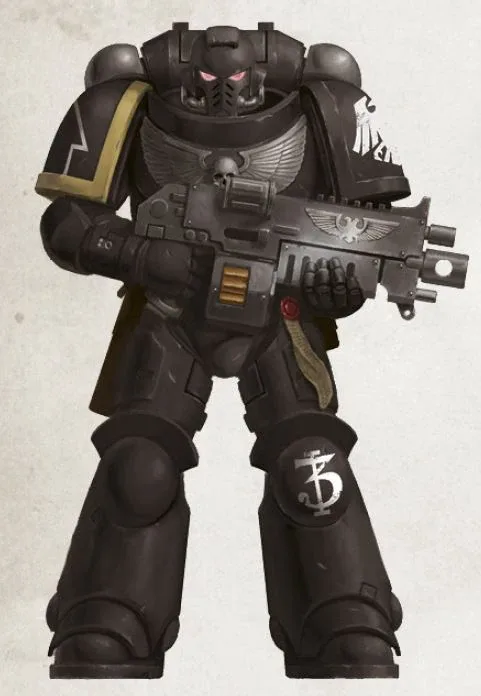
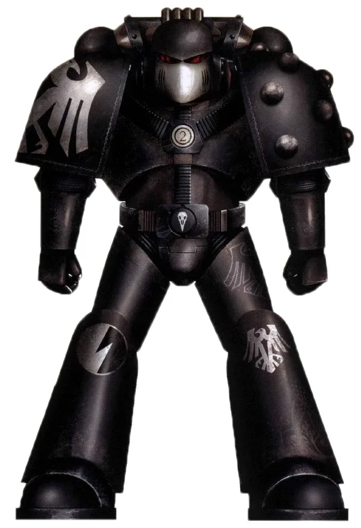
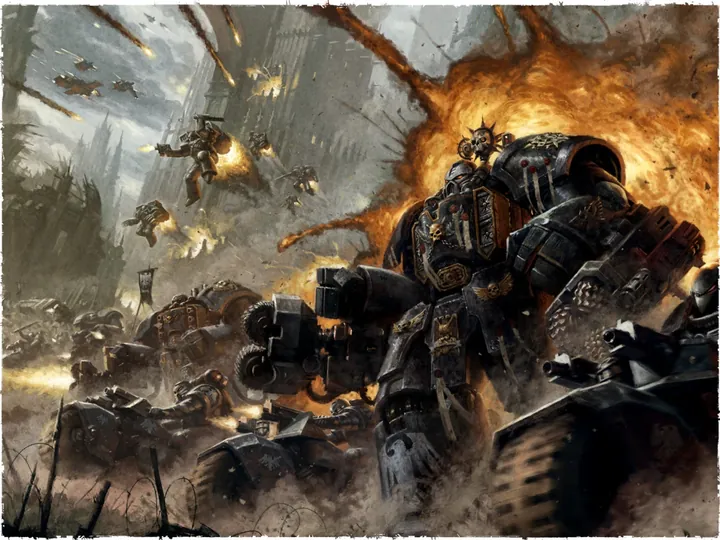
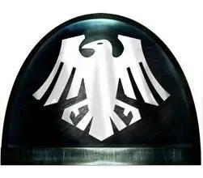
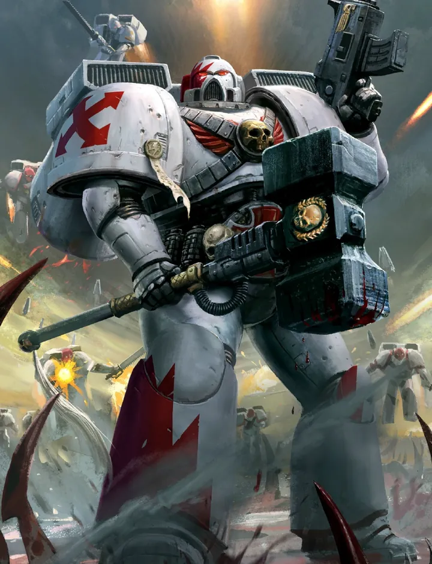
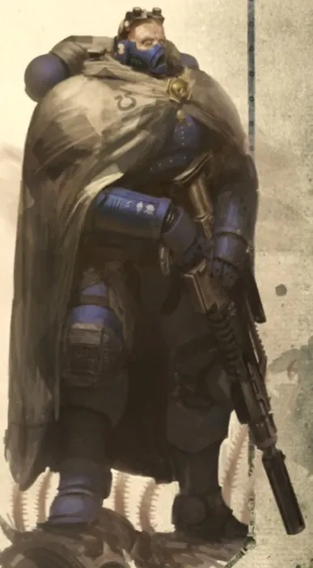
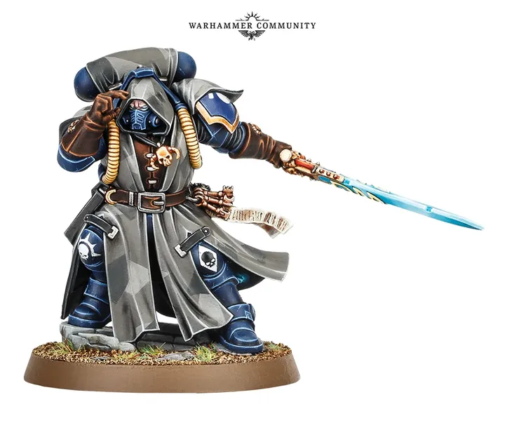
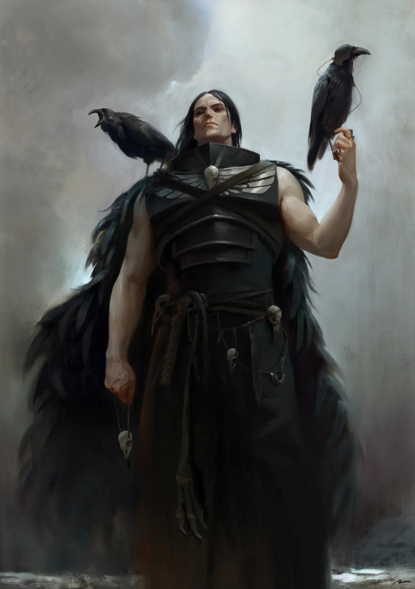

01ภาพรวม

นักลอบเร้นและนักรบกองโจร ผู้โจมตีจากเงามืดแล้วหายตัวไป
02ต้นกำเนิด
Legion ที่ 19 ภายใต้ Corvus Corax ผู้นำการกบฏของนักโทษบนดวงจันทร์ Deliverance รอดจาก Isstvan V เพียงหยิบมือ และการพยายามเร่งสร้าง Legion ใหม่จบลงด้วยทหารกลายพันธุ์
03เนื้อเรื่องเจาะลึก
ผู้ปลดปล่อยแห่ง Lycaeus
Corax เติบโตในคุกเหมืองบนดวงจันทร์ Lycaeus เขานำนักโทษก่อการปฏิวัติ ใช้การซุ่มโจมตีและกลยุทธ์ลับจนชนะผู้คุม — วิธีการรบที่กลายเป็นเอกลักษณ์ของ Legion ที่ 19
รอดจาก Isstvan V
Raven Guard ถูกสังหารจนเหลือเพียงไม่กี่พันนายที่ Isstvan V Corax พยายามเร่งสร้างทหารใหม่ด้วยวิธีที่ได้รับจากจักรพรรดิ แต่ถูก Alpha Legion และ Chaos แทรกแซงจนเกิดสัตว์ประหลาด ความผิดพลาดนี้หลอกหลอนเขาตลอดไป
04ยุค 30K — ในยุค Great Crusade และ Horus Heresy

ยุค 30K เชี่ยวชาญการลอบเร้นและโจมตีสายฟ้าแลบ รอดจาก Isstvan V และสู้ต่อตลอด Heresy
ดูภาพรวมยุค 30K ทั้งหมดที่ เนื้อเรื่องยุค 30K และความต่างของสองยุคที่ เปรียบเทียบ 30K vs 40K
05นิสัยและวัฒนธรรม
- เงียบ มีวินัย และชอบวางแผนให้ศัตรูพ่ายโดยเสียทหารน้อยที่สุด
- ผิวซีดและตาดำสนิท
- ใช้เครื่องไอพ่นติดหลังและหน่วยสอดแนม
06จุดที่น่าสนใจ
- Kayvaan Shrike ผู้นำคนปัจจุบัน
- ศัตรูตลอดกาล: Alpha Legion และ Word Bearers
07ความสามารถพิเศษ
สิ่งที่ทำให้ Raven Guard แตกต่างจากทัพอื่น — ทั้งพลังที่ติดตัวมาทั้งเผ่า/ทัพ และความสามารถของบุคคลสำคัญ
ของทั้งเผ่า/ทัพ

ปรมาจารย์การพรางตัว
Raven Guard เคลื่อนไหวเงียบและใช้เงามืดได้ดีที่สุด ลอบเข้าถึงผู้นำศัตรูแล้วฆ่าในครั้งเดียว — ยุทธวิธี "ตัดหัว" ที่ทำให้ทัพศัตรูแตกกระจาย

ผิวซีด ตาดำ
Gene-seed ที่มีปัญหาทำให้อวัยวะ Melanochrome ทำงานผิดปกติ ผิวของทหารซีดขาวขึ้นเรื่อย ๆ ส่วนผมและตากลายเป็นสีดำสนิท

Skyhammer — ทิ้งตัวจากฟ้า
ชอบบุกด้วย Drop Pod และ Jump Pack พร้อมกัน ตกลงกลางใจศัตรูก่อนที่อีกฝ่ายจะรู้ตัว
ของบุคคลสำคัญ

Corvus Corax
Primarch ผู้ล่องหนมีปีกและสามารถ "หายตัว" ไปในเงามืดจนแม้แต่พี่น้อง Primarch ก็มองไม่เห็น หลัง Heresy เข้าไปใน Eye of Terror เพื่อล่า Traitor ไม่หยุด

Kayvaan Shrike
Shadow Captainเคยทำสงครามกองโจรบนดาว Targus นานหลายเดือนจนชนะ Ork ที่มีจำนวนมากกว่ามหาศาล ขึ้นเป็น Chapter Master
08หน่วยและบทบาทในกองทัพ
Raven Guard เป็นผู้เชี่ยวชาญการลอบโจมตี ทุกกองร้อยถูกฝึกเหมือนหน่วยสเกาต์ และใช้การซุ่มโจมตีแบบ "ตัดหัว" ผู้นำศัตรู
Shadow Captain
ชาโดว์กัปตันตำแหน่งกัปตันของ Raven Guard เช่น Kayvaan Shrike ผู้นำการลอบโจมตีด้วย Jump Pack

Eliminator / Scout
อีลิมิเนเตอร์สไนเปอร์พรางตัว Raven Guard ถือว่าหน่วยลาดตระเวนสำคัญที่สุด ทุกนายต้องเก่งการพรางตัว
Vanguard Veterans
แวนการ์ดเวเทอแรนทหารผ่านศึกใช้ Jump Pack ตกลงจากฟ้ากลางวงศัตรู Raven Guard ขึ้นชื่อด้านนี้มากที่สุด

Phobos Librarian
ไลบรารีเรียนฟอบอสLibrarian ในเกราะ Phobos ที่เงียบเชียบ ใช้พลังจิตซ่อนตัวพี่น้องจากสายตาศัตรู
ตำแหน่งมาตรฐานของ Space Marine (Captain, Apothecary, Techmarine ฯลฯ) ดูได้ที่ หน่วยและบทบาทของ Space Marines และกฎการจัดองค์กรที่ Codex Astartes
09วีรกรรมและเหตุการณ์สำคัญ
Isstvan V
หนีรอดจากการสังหารหมู่ด้วยการรบกองโจร
สงครามกับ T'au
สูญเสีย Chapter Master Corvin Severax ใน Prefectia Campaign
10ตัวละครสำคัญ

Corvus Corax
Primarch (สาบสูญใน Eye of Terror)กลายเป็นร่างเงาตามล่า Lorgar
11ยุค 40K — สหัสวรรษที่ 41
ยุค 40K Raven Guard ทำสงครามลับทั่ว Eastern Fringe โดยเฉพาะกับ T'au Empire
12เนื้อเรื่องล่าสุด (Era Indomitus / M42)
Kayvaan Shrike แบ่ง Chapter ออกเป็นหน่วยปฏิบัติการลับทั่ว Segmentum Tempestus และ Pacificus โดยไม่เปิดเผยเป้าหมาย
หลังการเกิด Great Rift ปฏิทินของจักรวรรดิคลาดเคลื่อน เหตุการณ์ยุคปัจจุบันจึงมักระบุเพียง 'M42' ไม่มีปีที่แน่นอน
13แกลเลอรี